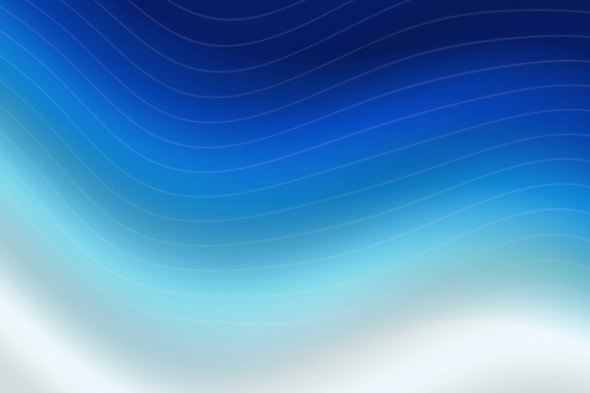

A clearer way
to build with glass.
Eleven custom elements. One small import. Native interactions with a layer of optical depth.
Use the components for controls and surfaces, or work directly with the refraction engine. This reference follows the code shipped in this repository.
Get started Browse the sourceStart with one import#
Copy the lib directory into your project and load components.js once. It registers all eleven custom elements and imports the SVG engine from the same directory. Serve the files over HTTP rather than opening them as local files.
<script type="module" src="./lib/components.js"></script>
<lg-switch checked>Notifications</lg-switch>These examples assume lib/ is beside your application entry page. Adjust the relative path for your project. For a GitHub Pages project site, keep its repository path in the URL. No package manager or UI framework is required.
Download the source: components.js, liquid-glass.js and, for video or canvas, glass-webgl.js.
Give glass a backdrop#
A glass surface needs pixels to bend. Mark an image or CSS background with data-lg-backdrop; the components align a copy behind the glass. This avoids relying on SVG backdrop filters outside Chromium.
<div class="scene" data-lg-backdrop="img">
<img src="./assets/material-lagoon.webp" alt="">
<lg-panel radius="24" refraction="10" bezel="0.2"
specular="0.12" specular-width="0.75">
A surface with a little depth.
</lg-panel>
</div>An empty data-lg-backdrop uses the container’s CSS background. Or set backdrop="#image-id" on an individual surface. Alignment follows scroll, resize and translation. Avoid scaling the glass with transform: scale().

Let the material do the quiet work.
Use your framework#
Import the module on the client, after the DOM APIs are available. The elements render their controls into the light DOM. In a bundled app, use a local path that resolves from your source file.
React / Next.js
'use client';
import { useEffect, useRef } from 'react';
export default function Settings() {
const control = useRef(null);
useEffect(() => {
let dispose;
let active = true;
import('./lib/components.js').then(() => {
if (!active) return;
const element = control.current;
const change = () => console.log(element.checked);
element.addEventListener('change', change);
dispose = () => element.removeEventListener('change', change);
});
return () => { active = false; dispose?.(); };
}, []);
return <lg-switch ref={control} checked>Notifications</lg-switch>;
}Depending on your TypeScript setup, declare the lg-* intrinsic elements in your JSX types.
Vue
// Configure this in the Vue compiler settings used by your build
app.config.compilerOptions.isCustomElement = (tag) => tag.startsWith('lg-');
// Load the elements in your client entry point
import './lib/components.js';For a precompiled Vue application, set isCustomElement in your Vue build plugin’s compiler options rather than only on the runtime app.
Switch#
<lg-switch>
A native checkbox with a glass thumb. Press and hold to reveal the refraction.
<lg-switch checked name="notifications">Notifications</lg-switch>| API | Description |
|---|---|
checked | Boolean attribute and property. The property reads and updates the state. |
disabled | Boolean attribute. Disables the internal input. |
name, value, aria-label | Copied to the checkbox at initialization. Use text content or an accessible label. |
change | Bubbling native checkbox event. Read event.target.checked or the host’s checked property. |
Slider#
<lg-slider>
A native range input with a refracting thumb. Its value property is a number.
<lg-slider label="Volume" min="0" max="100" step="1" value="40"></lg-slider>| API | Description |
|---|---|
min, max, step, name | Copied to the native range input at initialization. |
value | Numeric property and observed attribute. |
label | Accessible name for the range input. |
disabled | Boolean attribute. Disables the range input. |
input, change | Bubbling native events for continuous changes and committed changes. |
Segmented control#
<lg-segmented>
Select with a click, arrow keys, Home or End. Drag the indicator and release to commit; Escape or pointer cancellation restores the previous option.
<lg-segmented value="week" label="Date range">
<button value="day">Day</button>
<button value="week">Week</button>
<button value="month">Month</button>
</lg-segmented>| API | Description |
|---|---|
value | Initial attribute and runtime property. Matches a child button’s value or its text. |
label, disabled | Accessible group name and disabled state. Individual child buttons can also be disabled. |
change | Bubbling custom event with event.detail.value and event.detail.index. |
refresh() | Rebuilds the decorative label copy after changing button text. |
Panel#
<lg-panel>
A content surface. It adds a glass layer without changing the meaning of the content inside.
<lg-panel tone="light" radius="24">
<h3>Display settings</h3>
<p>Keep your workspace in focus.</p>
</lg-panel>| API | Description |
|---|---|
tone, radius, backdrop | Surface appearance and optional image selector. Radius defaults to 24px. |
Content | Place your own semantic headings, text and controls inside. No custom events. |
Toast#
<lg-toast>
A status surface with an optional icon. The toast() helper adds placement, motion, dismissal and a polite live region.
import { toast } from './lib/components.js';
const notice = toast('Changes saved', {
icon: 'check',
duration: 2600,
tone: 'light',
container: document.querySelector('.scene')
});
// Dismiss it early when the message is no longer relevant
notice.close();| API | Description |
|---|---|
icon | check, info, alert, bell, trusted SVG markup, or null. |
duration | Milliseconds, default 2600. Use 0 to keep the toast until clicked or closed. |
container | Defaults to document.body for viewport placement. A marked container supplies a local backdrop. |
tone, backdrop | Forwarded to the toast surface. |
Return value | { close(), element }. The returned element is an lg-toast. |
lg-toast attributes | icon, tone, radius, backdrop and shared optics. A standalone element does not auto-dismiss. |
Dock#
<lg-dock>
A glass shelf with a lens that follows pointer movement or keyboard focus. Bring your own buttons and icons.
<lg-dock aria-label="Workspace">
<button aria-label="Mail"><img src="./mail.svg" alt=""></button>
<button aria-label="Calendar"><img src="./calendar.svg" alt=""></button>
</lg-dock>| API | Description |
|---|---|
tone, radius, backdrop | Surface appearance. Radius defaults to 24px. |
Child controls | Native buttons or links keep their own actions, labels and events. The dock adds no custom selection event. |
Lens#
<lg-lens>
Wrap content in a moving lens. The original content outside the lens stays selectable and interactive. Give it an opaque background.
<lg-lens width="180" height="120" radius="36" x="50" y="50"
refraction="10" bezel="0.2" specular="0.12" specular-width="0.75">
<img src="./assets/material-lagoon.webp" alt="Abstract blue material">
</lg-lens>| API | Description |
|---|---|
width, height, size | Lens dimensions in CSS pixels. size supplies both defaults, otherwise 160px. |
x, y | Resting centre as a percentage of the host, default 50. |
radius | Defaults to half the shorter lens dimension. |
configure(options) | Changes width, height, radius and optics at runtime. |
moveTo(x, y) | Moves the centre in host content coordinates, in CSS pixels. |
Tune the optics#
Set these attributes before the component connects. They override that component’s own defaults; changing an attribute later does not generally reconfigure its glass. The navbar observes its body and indicator-* optics attributes. For other elements, use lg-lens.configure() or the core API for runtime changes.
| API | Description |
|---|---|
refraction | Bend distance at the rim, in CSS pixels. |
bezel | Curved rim width as a fraction of half the smaller lens dimension. 1 makes a full dome. |
curvature | Rim profile exponent. 2 is circular; larger values create a flatter centre. |
ior | Index of refraction. Shapes the transition from the rim inward. |
chroma | Colour fringe strength. 0 skips the extra colour passes. |
blur | Frost blur in CSS pixels. |
specular, specular-width | Highlight strength and width in CSS pixels. |
light-angle | Light direction in degrees. −90 is light from the top. |
The examples here use refraction="10" bezel="0.2" specular="0.12" specular-width="0.75". These are design choices, rather than library defaults.
Theme with CSS#
Custom properties inherit from the page or any containing element. Match the text and tint to the actual backdrop, and check contrast in every state.
:root {
--lg-accent: #1761d0;
--lg-on: #298654;
--lg-text: #17202c;
--lg-on-glass: #ffffff;
--lg-tint: rgb(16 35 56 / 0.35);
--lg-tint-strong: rgb(255 255 255 / 0.72);
}| API | Description |
|---|---|
--lg-accent, --lg-on | Accent for selected controls, and the switch’s on track. |
--lg-surface | Colour behind a control. Use transparent over a glass or image surface. |
--lg-track, --lg-track-off | Slider/segmented track and switch off track. |
--lg-tint, --lg-tint-strong | Default glass tint and tint for tone="light". |
--lg-text, --lg-on-glass | Text on light surfaces and default glass. |
--lg-indicator | Navbar selection indicator. |
--lg-shadow-1, --lg-shadow-2 | Thumb and glass shadows. |
--lg-fallback | Fallback backdrop filter. Default blur(16px) saturate(1.6). |
--lg-toast-top | Toast distance from the top. Default 16px. |
Core API#
createGlass(target, options) refracts an element’s own pixels using an SVG displacement map. Position and refraction updates reuse the map; changes to its shape or map parameters regenerate it through the shared cache.
import { createGlass, createSpring } from './lib/liquid-glass.js';
const target = document.querySelector('.content');
const glass = createGlass(target, {
x: 24, y: 24, width: 180, height: 120, radius: 36,
refraction: 10, bezel: 0.2, specular: 0.12, specularWidth: 0.75
});
// Move the lens while reusing its shape map
const position = createSpring(24, (x) => glass.update({ x }));
position.set(120, { velocity: 240 });
// Release animation and filter resources when the view is removed
function dispose() {
position.stop();
glass.destroy();
}| API | Description |
|---|---|
x, y, width, height, radius | Lens rectangle in CSS pixels, relative to the target’s border box. Defaults: 0, 0, 120, 64, 32. |
refraction, bezel, curvature, ior | Defaults: 18, 0.6, 4, 1.5. |
chroma, blur, invert | Defaults: 0.12, 0, false. Invert makes a concave lens. |
specular, specularWidth, lightAngle | Defaults: 0.45, 2, −120. |
mapScale | Map pixels per CSS pixel. 0 uses devicePixelRatio capped at 2. |
fit, clip, sync, hidden | Boolean flags, default false. Follow the target’s size, clip to the lens, update synchronously, or hide the lens. |
mode: 'content' | 'backdrop' | Content is the default. Backdrop mode uses an SVG backdrop filter in Chromium and a CSS fallback elsewhere. |
fallback | CSS backdrop filter for non-Chromium backdrop mode. Default blur(12px) saturate(1.6). |
update(options), destroy() | Change lens options, or remove the filter and release its resources. |
Maps, springs and engine detection
renderLensMap(options, scale = 1) returns a canvas displacement map. DEFAULTS exposes the core defaults. engine reports blink, webkit or gecko.
createSpring(initial, onUpdate, { stiffness = 520, damping = 38, mass = 1 }) calls back with value and velocity. Its handle provides set(next, { immediate, velocity }), stop(), and read-only value and target. Reduced motion makes updates immediate.
Video and canvas#
Use the WebGL renderer for video, images or canvas pixels. It shares the lens maps with the SVG engine and draws into an overlay canvas. Keep the canvas positioned and sized over its source.
import { createGlassRenderer } from './lib/glass-webgl.js';
const video = document.querySelector('video');
const canvas = document.querySelector('canvas');
const renderer = createGlassRenderer(canvas, video);
renderer.setLenses([{
x: 24, y: 24, width: 180, height: 120, radius: 36,
refraction: 10, bezel: 0.2, specular: 0.12, specularWidth: 0.75
}]);
renderer.start();
// Release GPU textures and observers when the view is removed
function dispose() {
renderer.destroy();
}| API | Description |
|---|---|
createGlassRenderer(canvas, source, { pixelRatio }) | Source may be a video, image, canvas or ImageBitmap. Requires WebGL and throws if unavailable. |
setLenses(list) | Replaces all lenses. Lens objects use the core geometry and optics options. |
updateLens(index, options) | Updates an existing lens at its zero-based index. |
render() | Draws a frame on demand. |
start(), stop() | Starts or stops rendering. Video uses video-frame callbacks when available. |
destroy() | Stops rendering and releases textures, observers and event listeners. |
Use same-origin media or media served with appropriate cross-origin permission. Source size, object fit, browser texture limits and context loss still matter. Handle renderer creation failure in your application.
Browser behaviour#
The SVG content approach and marked image backdrops are designed for Chromium, WebKit and Gecko. Arbitrary DOM behind a surface only refracts through SVG backdrop filters in Chromium; other engines use frosted blur. Avoid promising identical output across engines without testing your actual page.
Keep filtered regions reasonably small, particularly in WebKit, which limits filter input size. For playing video, use the WebGL path. Test the browsers and devices your application supports.
Keep the controls usable#
Switches and sliders use native inputs. Segmented controls use buttons with radio semantics and keyboard navigation. Decorative glass copies are hidden from assistive technology and do not receive pointer input.
The implementation respects prefers-reduced-motion and prefers-reduced-transparency. You still own accessible names, content contrast, document structure, focus order and a usable result when effects are unavailable. Check every image, tint and selected state together.
For coding agents#
The repository includes a Liquid Glass skill with implementation guidance and browser-checking tools. Read its instructions before copying it into your coding agent’s local skills directory. Use the source in this repository so its guidance matches this version.
Credits and licence#
Released under the MIT licence. Library copyright © 2026 gentpan. This project builds on gentpan/liquidglass.
The live DOM displacement-map approach was described by Aave Labs in Building Glass for the Web. The library is an independent implementation. Library icons are from Lucide.